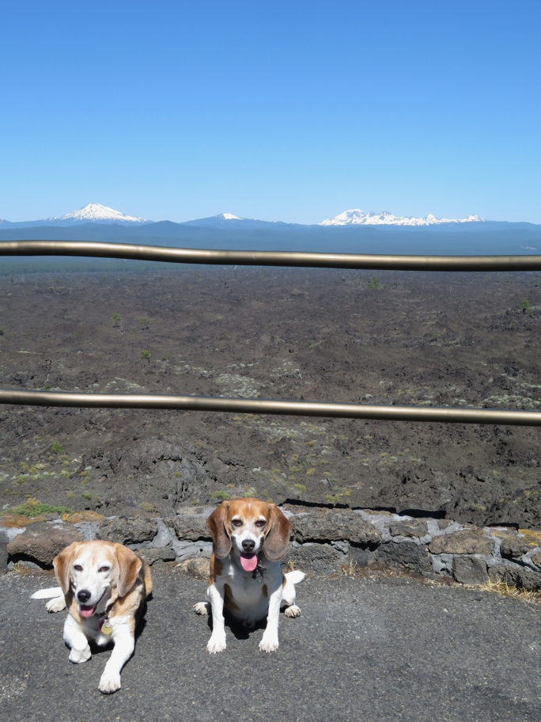

Although they were already suspicious of the heat, Huxley and Wallace had little trouble reaching this overlook at the end of a short trail from the visitor center through the lava bed. Mt. Bachelor is on the left and the Sisters on the right. Since dogs are not allowed on the shuttle, we then walked all the way to the top of the butte and back down, which pretty much wiped them both out for a couple of days.
Bend Huxley Beagle Oregon Wallace Beagle